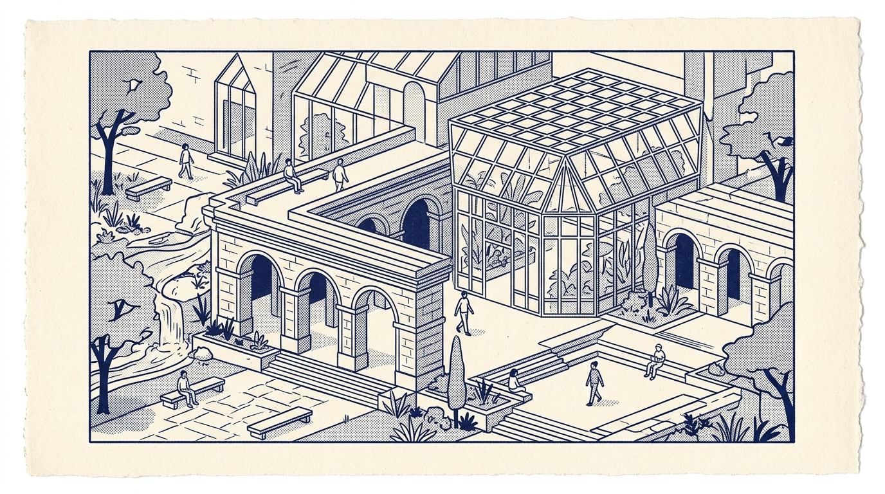

Bayangkan sebuah kampus di mana setiap mahasiswa memiliki agen kecerdasan buatan (AI Co-Tutor) yang tidak hanya memahami gaya belajar mereka secara presisi detik demi detik, tetapi juga mampu mengurai konsep kuantum paling rumit, mengoreksi kode secara real-time, dan menyusun kurikulum adaptif tanpa kenal lelah. Di titik ini, sebuah pertanyaan mendasar muncul ke permukaan: Jika pengetahuan telah terkomoditisasi dan menjadi gratis, apakah gedung-gedung universitas dan para dosen di dalamnya masih memiliki alasan untuk bertahan?

"Universitas tidak kehilangan relevansi karena kehadiran AI, melainkan bertransformasi dari sekadar transmisi materi satu arah menuju penguatan penalaran kritis, integritas karakter, dan kolaborasi kontekstual."
1.1 Transformasi Paradigma Universitas: Menuju Pusat Validasi Integritas & Kolaborasi
Secara historis, universitas berkembang sebagai pusat distribusi pengetahuan di tengah kelangkaan literatur. Di era kecerdasan buatan otonom (Autonomous AI), di mana transmisi materi pengantar dapat diakses secara instan dengan efisiensi tinggi, fungsi institusi pendidikan tinggi mengalami reorientasi strategis:
| Dimensi | Model Pembelajaran Konvensional | Model Pembelajaran Pasca-Otomasi AI |
|---|---|---|
| Fungsi Utama | Penyampaian materi perkuliahan & evaluasi pemahaman berbasis tes terstandar. | Suaka Validasi Karakter & Integritas: Verifikasi kapasitas analitis otentik dan pertimbangan moral mahasiswa. |
| Ruang Fisik | Ruang kelas untuk penyampaian materi perkuliahan tatap muka. | Physical Collision Hub: Ruang dialog mendalam, pengembangan proyek riset, inkubasi solusi, dan kepemimpinan tim. |
| Validasi Kompetensi | Sertifikat kelulusan kurikulum berbasis pemenuhan satuan kredit semester. | Dynamic Trust Passport: Portofolio proyek terverifikasi, rekam jejak penyelesaian masalah, dan kontribusi nyata. |
1.2 Evolusi Peran Dosen: Menuju Pembimbingan Dialektis (Meta-Mentor)
Peran dosen bertransformasi melampaui sekadar penyampai materi searah (lecturer). Ketika AI mampu menyajikan informasi faktual secara instan, keunggulan pedagogis pendidik berfokus pada: seni membimbing nalar kritis, menumbuhkan integritas moral, dan melatih perumusan pertanyaan yang mendalam (the art of questioning).
Intellectual Sherpa & Socratic Inquirer
Dosen bertindak sebagai pemandu kognitif yang memicu telaah kritis, mengidentifikasi bias algoritma, dan mendampingi mahasiswa dalam dinamika penalaran mendalam (productive struggle).
Ethical & Ontological Compass
Menuntun batas-batas moral, implikasi kemanusiaan, dan tanggung jawab sosial dari inovasi teknologi yang dikembangkan mahasiswa di tengah masyarakat.